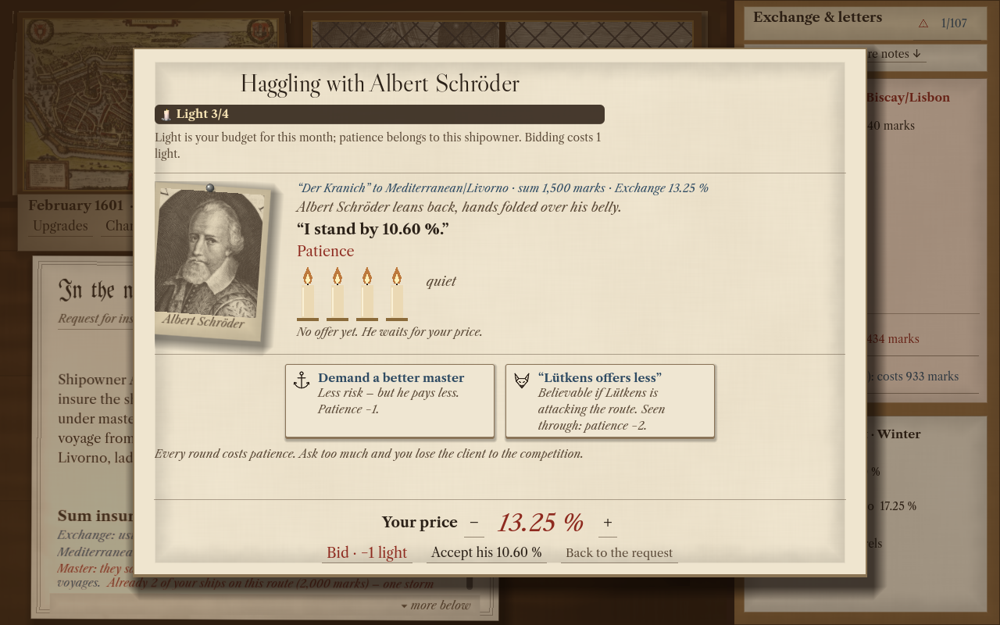
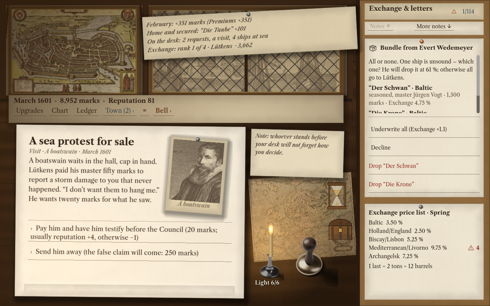
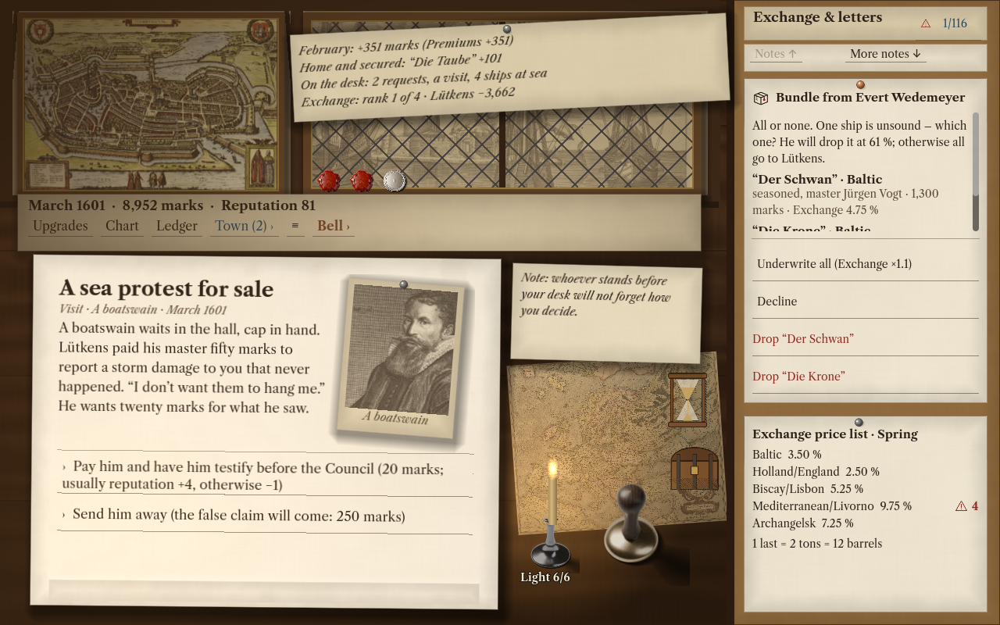

Prüfen & entscheidenRead & decide
Vergleiche Dokumente, entdecke Widersprüche und entscheide, wem du vertraust. Nicht jeder Schaden ist ein Unglück.Compare documents, find contradictions and decide whom to trust. Not every loss is an accident.
Eine historische HandelssimulationA historical trading simulation
Hamburg, 1600. Ein Pult an der Börse. Ein Schiff auf hoher See. Und eine Unterschrift, die dein Haus reich machen kann — oder ruinieren.Hamburg, 1600. A desk at the Exchange. A ship on the open sea. And a signature that could make your house a fortune — or ruin it.
Das Kontor betretenEnter the counting houseFür iPad und Mac in VorbereitungIn preparation for iPad and Mac

Das Meer schreibt die RechnungThe sea sends the bill
Reeder brauchen deine Deckung. Du prüfst ihre Papiere, hörst auf Gerüchte und handelst die Prämie aus. Wie viel ist ein Versprechen wert, wenn Sturm, Krieg und Betrug mit an deinem Tisch sitzen?Shipowners need your cover. Read their papers, listen to rumours and negotiate the premium. What is a promise worth when storms, war and fraud have a seat at your table?
Vergleiche Dokumente, entdecke Widersprüche und entscheide, wem du vertraust. Nicht jeder Schaden ist ein Unglück.Compare documents, find contradictions and decide whom to trust. Not every loss is an accident.
Setze die Prämie, wähle deinen Anteil und besiegle die Police. Jeder Vertrag bindet dein Kapital.Set the premium, choose your share and seal the policy. Every contract puts your capital on the line.
Führe dein Haus durch vier Epochen von 1600 bis 1720. Erben, Ämter und Krisen verändern dein Geschäft.Lead your house through four eras, from 1600 to 1720. Heirs, public offices and crises reshape your business.
Tinte, Papier und EntscheidungenInk, paper and decisions
Echte Spielbilder · englische Oberfläche
Entwicklungsstand Oktober 2026Actual gameplay · English interface
Development version, October 2026



Dein Geschäft. Dein Tempo.Your business. Your pace.
Spiele die Kampagne ohne Internetverbindung. Auf Apple-Geräten ergänzt optionales Game Center Erfolge und Bestenlisten. Das Kontor bleibt auch ohne Anmeldung geöffnet.Play the campaign without an internet connection. On Apple devices, optional Game Center adds achievements and leaderboards. Your counting house stays open without signing in.
iPad · Mac
In Vorbereitung. Neuigkeiten zur Veröffentlichung folgen hier.In preparation. Release news will appear here.
Fragen zum Spiel? Zum SupportQuestions about the game? Visit support →Kontor ist ein fiktionales Spiel. Verträge, Versicherungen und Auszahlungen sind Teil der Spielwelt.Kontor is a fictional game. Contracts, insurance and payouts belong to its game world.